🌐 Language / 語言: 🇯🇵 日本語 | 🇺🇸 English | 🇨🇳 简体中文
---
OBSのドックから、Twitchの配信準備・配信中の操作・情報管理をまとめて行うローカルツールです。
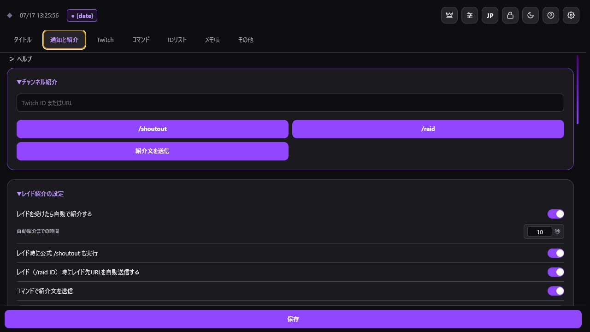
TwitchManagerドック2. Twitch認証を設定
3. 機能一覧を確認
スクリーンショットと更新手順は1.0.3リリース案内、変更一覧は更新履歴を参照してください。
データはPC内に保存されます。キャッシュ削除やPC移行の前にバックアップしてください。
🌐 Language / 語言: 🇯🇵 日本語
---
TwitchManagerの主な変更を、新しいバージョンから順に掲載します。
スクリーンショット、更新手順、更新後の確認項目は1.0.3リリース案内を参照してください。
{date}, {Category}, {count}, {コラボ}): 配信タイトル内のタグを日付、ゲームカテゴリ変換、配信回数カウンター、IDリストの @ID メンバー文字列へ送信時に自動置換する機能を搭載しました。
全設定またはタイトル/IDリスト/メモの選択保存と、既存データを破壊せず新しいカードのみを追加合成する高度なマージ復元エンジンを追加しました。
.txt プレーンテキストバックアップ復元サポート: JSONファイルに加え、.txt テキストファイル（タイトル行・@ID 行）の解析復元に対応。Windowsファイルダイアログでの並列表示に対応しました。
報酬の一時停止コントロール（黄色ボタン）、スポイト（EyeDropper）・使用中カラーパレット、コスト・コメント要求の一括編集機能を追加しました。
タブ上部に常時固定されるツールバーと、プレビュー画面で直接クリックできるインタラクティブタスクリストを搭載しました。
置換タグコピーと @ID リストダイレクトコピーの2セグメントボタン、および同一Twitch IDの重複集約モーダルを追加しました。
---
「その他」タブでバックアップを作成してから、最新のインストーラーを実行してください。同じ場所へ上書きインストールした場合、OBSへ登録済みのドックURLは通常そのまま利用できます。
過去の配布物はGitHub Releasesで確認できます。
🌐 Language / 語言: 🇯🇵 日本語
---
公開日: 2026年8月28日
対象: Windows 11 / macOS 11以降
1.0.3では、配信準備用データの管理、チャンネルポイント操作、メモ、バックアップ、狭いOBSドックでの表示を更新します。
1. 右上の歯車アイコンを開きます。
2. 「バックアップ」で現在の設定を保存します。
3. TwitchManagerとOBSを終了します。
4. 1.0.3のインストーラーを実行し、現在と同じ場所へ上書きします。
5. OBSを起動し、認証状態、タイトル、IDリスト、通知設定を確認します。
認証情報はバックアップの対象外です。別のPCへ移行した場合は、移行先でTwitch認証を行ってください。
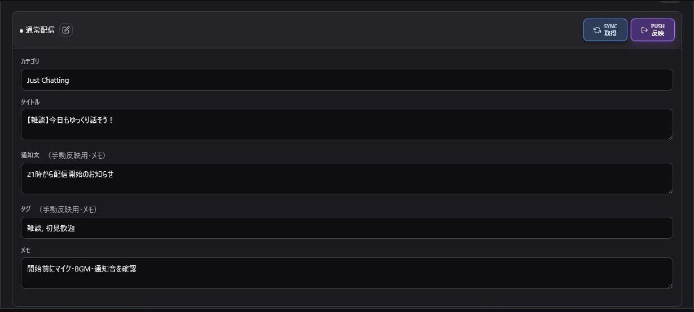
タイトル管理{date}: 現在の日付{Category}: 登録したカテゴリ名への変換{count}: 配信回数{コラボ}または登録したグループ名: IDリストの参加者Twitchへ反映される内容は、送信前のプレビューで確認してください。詳しい操作はタイトル管理を参照してください。
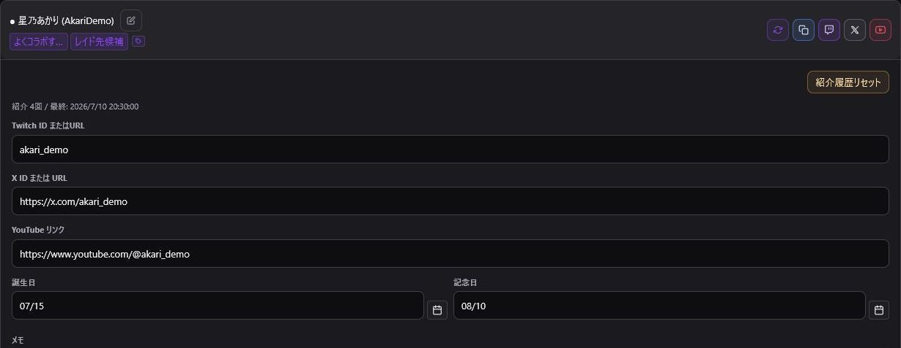
IDリスト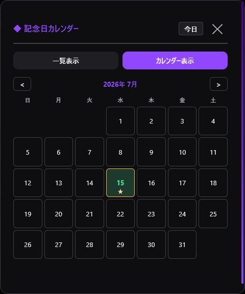
誕生日・記念日カレンダー@ID 一覧を個別にコピー統合前に表示名、SNS、メモ、誕生日・記念日を確認してください。詳しくはIDリストを参照してください。
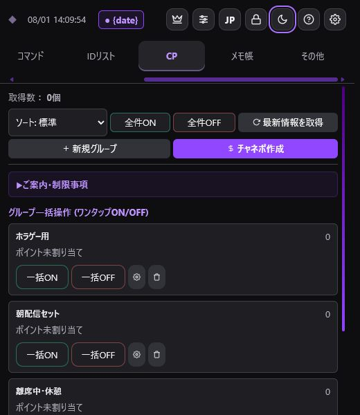
チャンネルポイント管理編集・削除できるのは、原則としてTwitchManagerから作成したカスタム報酬です。Twitch公式の自動報酬やPower-upsは対象外です。詳しくはTwitch機能を参照してください。
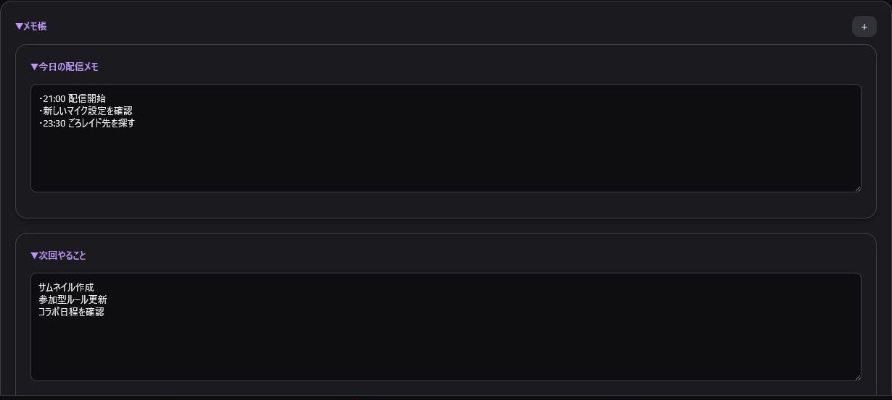
メモ帳詳しくはメモ帳・その他を参照してください。
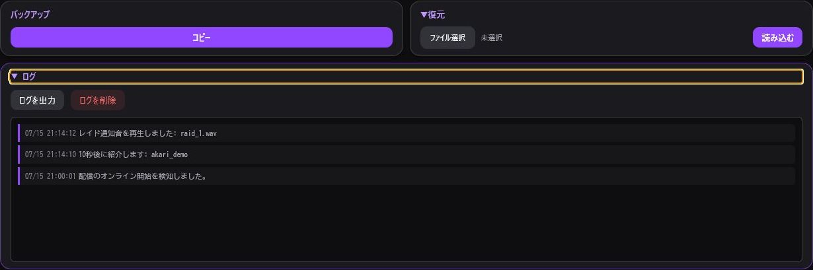
バックアップと復元復元前にも現在のデータをバックアップしてください。詳しくは設定・バックアップを参照してください。
幅480px以下ではボタン、カード、設定項目を折り返して表示します。幅300px以下ではヘッダーを複数行へ配置します。表示が更新されない場合は、OBSドックを右クリックして再読み込みするか、Ctrl+Rを押してください。
レイド開始に失敗した際のTwitch APIエラーを、日本語・英語・簡体中国語の選択中の言語で表示するよう修正しました。アウトバウンドレイドのイベントログも選択中の言語で表示します。
問題がある場合は、認証情報を含めず、OS、OBSのバージョン、発生手順、発生時刻、イベントログを添えて報告してください。
🌐 Language / 語言: 🇯🇵 日本語 | 🇺🇸 English | 🇨🇳 简体中文
---
1. GitHubの最新リリースを開きます。
2. AssetsからTwitchManager-Windows11-Setup.exeをダウンロードして実行します。
3. インストールを完了します。
既定のインストール先は、Windowsの「ドキュメント」フォルダ内にあるTwitchManagerです。
1. GitHubの最新リリースを開きます。
2. TwitchManager-macOS.pkgをダウンロードしてインストールします。
既定のインストール先は/Applications/TwitchManagerです。対応環境はmacOS 11以降です。
TwitchManagerは起動時に最新の安定版を確認します。新しいバージョンがある場合は、現在の版と最新の版を表示するダイアログが開きます。
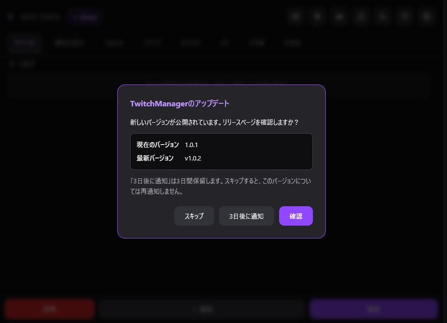
アップデート通知ダイアログ確認は最大でも24時間に1回です。beta版では通知を表示しません。通信できない場合も通常どおり起動し、エラーダイアログは表示しません。更新前に「その他」タブからバックアップを作成してください。
1. OBS Studioの「ドック」から「カスタムブラウザドック」を開きます。
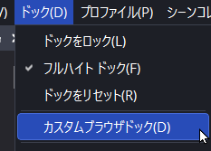
OBSのドックメニュー2. ドック名にTwitchManagerと入力します。
3. URL欄にOBS用URLを貼り付けます。URLは次のいずれかの方法で取得できます。
OBS_Dock_URL.txtに記載されたURLを使用します。TwitchManagerDock.htmlをブラウザで開き、アドレスバーに表示されたURLをコピーします。4. 「適用」を押します。
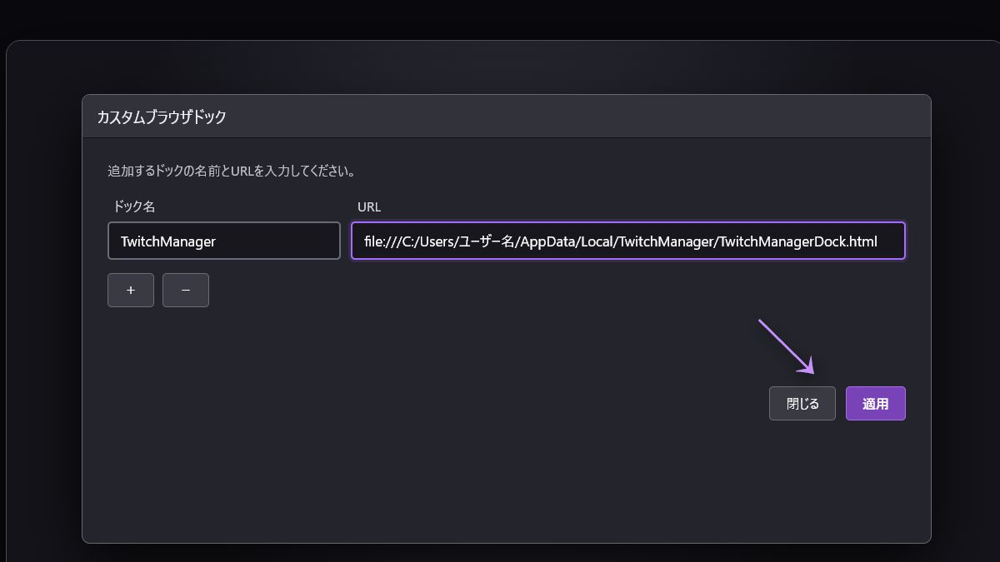
5. 追加されたドックをドラッグして配置し、文字やボタンが読める幅に調整します。
6. 右上の歯車からTwitch認証を設定します。
ZIP版を使用する場合は、HTMLファイルだけを取り出さず、同梱ファイルを同じフォルダ構成のまま配置してください。
🌐 Language / 語言: 🇯🇵 日本語 | 🇺🇸 English | 🇨🇳 简体中文
---
Twitchへの反映、イベント検知、チャット操作などを使うにはアクセストークンが必要です。
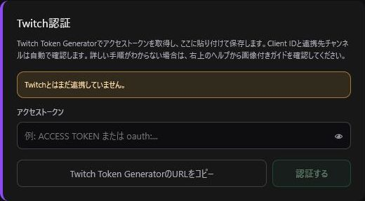
Twitch認証設定1. 右上の歯車を開きます。
2. 「Twitch Token GeneratorのURLをコピー」を押します。
3. 既定のブラウザでURLを開き、Custom Scope Tokenを作成します。
4. ACCESS TOKENをTwitchManagerへ貼り付けて保存します。
5. 連携アカウントが表示されたことを確認します。
| 機能 | 権限（Scope） |
|---|---|
| タイトル・カテゴリ | channel:manage:broadcast |
| チャット | user:read:chat / user:write:chat |
| 通知 | bits:read / channel:read:subscriptions / channel:read:redemptions |
| お出迎え通知 | moderator:read:chatters |
| 予測・投票 | channel:manage:predictions / channel:manage:polls |
| レイド・チャンネル紹介 | channel:manage:raids / moderator:manage:shoutouts |
| チャット管理 | moderator:manage:announcements / moderator:manage:chat_settings |
| クリップ・VIP | clips:edit / channel:read:vips / channel:manage:vips |
権限不足の場合は、該当機能だけが失敗します。ポイント引き換え履歴にはchannel:read:redemptions、/raidの実行にはchannel:manage:raids、お出迎え通知にはmoderator:read:chattersが必要です。新しい機能を使うときや認証エラーが出たときは、必要な権限（Scope）を付けてトークンを再発行してください。
🌐 Language / 語言: 🇯🇵 日本語 | 🇺🇸 English | 🇨🇳 简体中文
---
| タブ | できること |
|---|---|
| タイトル | タイトル・カテゴリの保存、同期、反映 |
| 通知と紹介 | レイド紹介、送信レイド、紹介文、通知音、OBS音声出力、お出迎え通知 |
| Twitch | チャンネルポイント管理、サポーター・ポイント引き換え集計、予測・投票、チャット、クリップ、VIP |
| コマンド | 配信・チャット・ユーザー管理 |
| IDリスト | 配信者ID、SNS、タグ、誕生日・記念日 |
| メモ帳 | 配信メモの保存 |
| その他 | バックアップ、復元、イベントログ |
Twitchへの反映やイベント検知にはTwitch認証が必要です。表示する機能は設定から絞り込めます。
安定版は起動時に新しいリリースを確認します。詳しくはインストールとOBSへの追加の「アップデート通知」を参照してください。
🌐 Language / 語言: 🇯🇵 日本語 | 🇺🇸 English | 🇨🇳 简体中文
---
配信タイトルとカテゴリ（ゲーム名等）をカードとして保存し、1タップでTwitchへ反映・自動変換する高度なタイトル置換エンジンです。
1. カテゴリ・テンプレートの作成: 「＋ テンプレートを追加」をクリックし、ゲーム名や企画ごとのグループを作成します。
2. カードの追加: テンプレート右上の「＋」で配信タイトルカードを追加します。
3. タイトルとゲーム名の設定: ゲームカテゴリと配信タイトルを入力して保存します。
💡 ポイント: 通知文、タグ、メモは配信準備用の控え（メモ）です。Twitchへ直接送信・反映されるのは「配信タイトル」と「ゲームカテゴリ」です。
※ カテゴリはTwitchの正式名称が必要です。最初にTwitch側で設定して「同期」を押すと、正確な名称が読み込まれて入力ミスを防げます。
---
ヘルプセクション下部の「共有共通タグバー」を使うと、配信タイトル内に記述されたタグ文字列が、送信・コピー時に自動的に動的テキストへ変換されます。
| タグ記法 | 展開内容 | 説明 |
|---|---|---|
{date} | 今日の日付・曜日 | 表示設定で指定したフォーマット（例: 2026/08/21(金)）に自動変換されます。 |
{Category} | ゲームカテゴリ変換 | 指定したゲーム名やエイリアスを自動変換ルールに基づいて置換します。 |
{count} | 配信回数カウンター | 通算配信回数（例: 5）に自動置換されます。配信更新ごとに自動カウントアップ可能。 |
{コラボ} / {グループ名} | 参加メンバーの @ID | IDリストの該当カテゴリに登録されたメンバーのTwitch ID（例: @user1 @user2）に自動置換されます。 |
「単語セット・タグ設定」モーダルでは、独自の自動置換ルールやゲームカテゴリ変換マップを作成できます。
逆転裁判1 → 逆転裁判 蘇る逆転）を優先変換するルールを作成可能です。---
Ctrl+R を押してください。🌐 Language / 語言: 🇯🇵 日本語 | 🇺🇸 English | 🇨🇳 简体中文
---
「通知と紹介」タブでは、チャンネル紹介、レイド時の自動処理、紹介文、通知音を設定します。
Twitch IDまたはチャンネルURLを入力し、次の操作を行います。
/shoutout: 公式のチャンネル紹介を実行/raid: 入力したチャンネルへのレイドを開始IDリストに登録済みの配信者は入力候補に表示されます。/raidを押す前に、入力したTwitch IDと配信先を必ず確認してください。
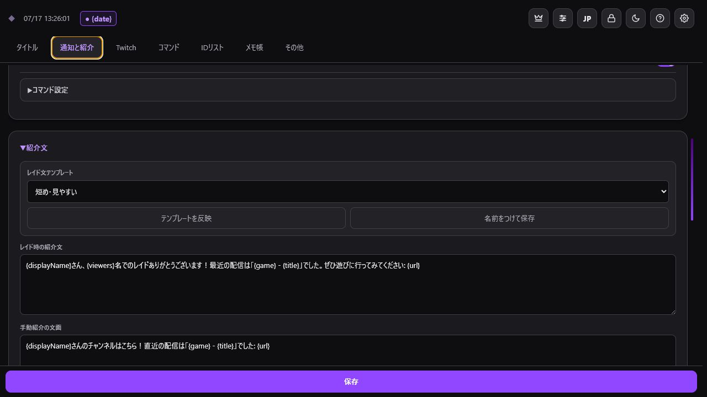
レイド紹介設定/shoutout）を同時実行/raidを実行したとき、レイド先URLをチャットへ自動送信受信レイド用、手動紹介用、送信レイド用の文面を別々に保存できます。送信レイド用の文面は、/raid実行後にレイド先URLを案内するときに使います。
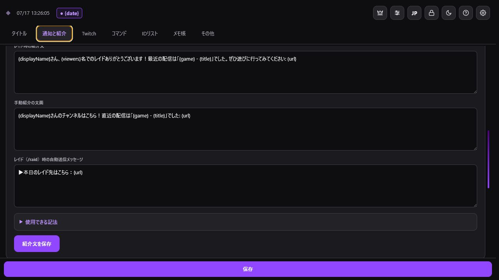
紹介文テンプレート| 記法 | 内容 |
|---|---|
| {displayName} | 表示名 |
| {username} | Twitch ID |
| {viewers} | レイド人数 |
| {url} | チャンネルURL |
| {game} | 直近のカテゴリ |
| {title} | 直近のタイトル |
送信レイド用の文面では{url}がレイド先のチャンネルURLに置き換わります。
「Twitchのレイド受付設定」から設定URLをコピーし、PCの既定のブラウザで開きます。Twitchへのログインが必要な場合も、普段使っているブラウザでそのまま認証できます。
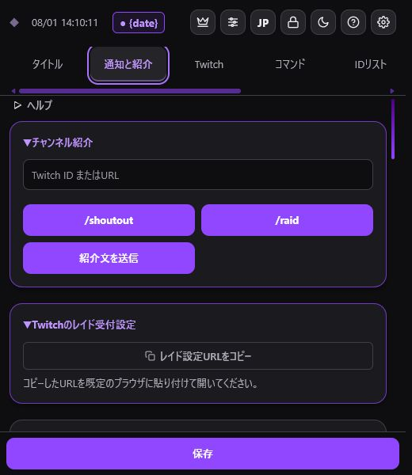
レイド受付設定URLレイド、コメント、ポイント引き換え、初回コメントごとに、オン・オフ、音源、音量を設定します。「OBSへ通知音をまとめる」が無効な場合は、TwitchManager本体から再生します。
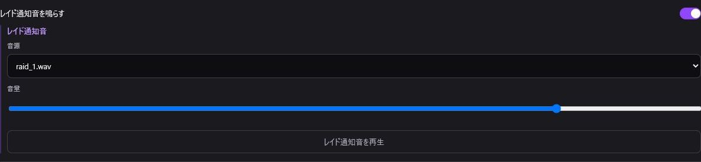
通知音の基本設定1. 「音声フォルダを選択」を押します。
2. 音源が入ったフォルダを選びます。
3. 各通知の音源を選び、試聴して保存します。
推奨形式はwavまたはmp3です。ページの再読み込みやOBS再起動後は、ブラウザの制限により同じフォルダを再選択する必要があります。
自動応答用アカウントなどへ通知音を鳴らしたくない場合は、「通知音を鳴らさないユーザー」にTwitchログインIDを登録します。
TwitchManagerの音声を、1本のOBSブラウザソースから再生できます。通知ごとに別々のソースを作る必要はありません。
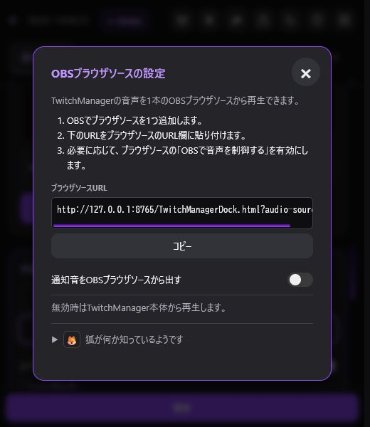
OBSブラウザソースの設定1. 通知音設定の「🔊 OBSへ通知音をまとめる」を開きます。
2. 表示されたブラウザソースURLをコピーします。
3. OBSでブラウザソースを1つ追加し、コピーしたURLを貼り付けます。
4. 「通知音をOBSブラウザソースから出す」を有効にします。
5. 通知音を試聴し、OBSの音声ミキサーへ1回だけ入力されることを確認します。
有効時はOBSブラウザソースから、無効時はTwitchManager本体から再生します。OBS側で配信者自身も音を聞く場合は、音声モニタリングを必要に応じて設定してください。同じブラウザソースを複数追加したり、OBSのモニタリング音声をデスクトップ音声でも取り込んだりすると、二重に聞こえる場合があります。
「🔊 OBSへ通知音をまとめる」の説明画面にある狐アイコンを押すと、「お出迎え通知」を有効にできます。有効にすると、通知音設定の下部へTwitch IDと通知音の登録欄が表示されます。
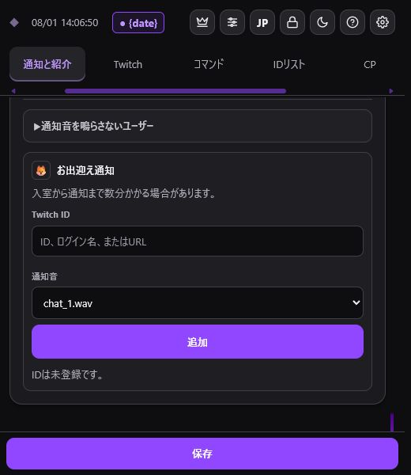
お出迎え通知の設定1. 「お出迎え通知」を有効にします。
2. Twitch ID、ログイン名、またはチャンネルURLを入力します。レイド紹介などの履歴にあるIDは候補から選べます。
3. 通知音を選び、「追加」を押します。
指定したリスナーが配信のチャット参加者一覧に現れると、コメントをしていなくても、その配信で一度だけ通知音を鳴らします。配信開始時からチャット参加者一覧にいるリスナーには、開始直後の誤通知を避けるため鳴らしません。一度鳴ったリスナーが退出して戻っても、同じ配信では再び鳴りません。
参加者一覧を定期的に確認するため、入室から通知まで数分かかる場合があります。
遊び心のある機能です。相手がコメントせずに視聴していることが分かる場合があるため、配信の雰囲気や相手との関係に合わせてご利用ください。
🌐 Language / 語言: 🇯🇵 日本語 | 🇺🇸 English | 🇨🇳 简体中文
---
「Twitch」タブには、配信中・配信後に活用できる多彩なTwitch API連携機能が揃っています。
取得したチャンネルポイント報酬の確認、ON/OFF切り替え、一時停止、一括編集、グループ分けを管理します。
⚠️ Twitch APIの制限事項・Power-upsについて:
Twitch APIの仕様により、一括操作やTwitchManagerからの編集・削除を行えるのは「TwitchManager（本アプリ）で作成したカスタム報酬」のみです。Twitch公式管理画面で作成された標準報酬や「Power-ups（Twitch公式パワーアップ機能）」は表示・一部連携のみとなります。
---
チャンネルポイントアイコンやサブスクバッジ・エモートの作成を支援する外部ツール「Twitch Image Resizer」へのワンタップアクセスボタンが追加されました。最適な解像度（28x28 / 56x56 / 112x112等）に画像を自動変換できます。
---
初見、レイド、フォロー、Bits、サブスク、ギフト、チャット、チャンネルポイント引き換えを集計し、お礼文としてワンタップコピーします。
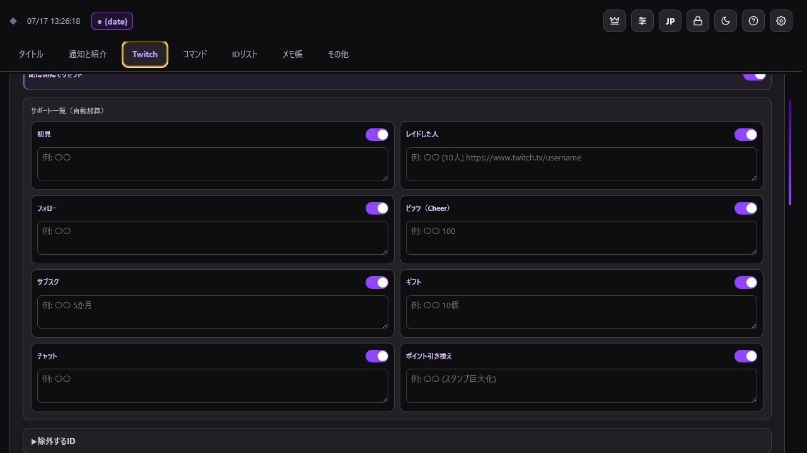
サポーターリストポイント引き換えには、カスタム報酬に加えて、スタンプ巨大化、メッセージエフェクト、画面全体のお祝い、メッセージ強調などの自動報酬も記録されます。Twitchのパワーアップで使われたBitsも「ビッツ（Cheer）」へ反映されます。
不要な項目と自動応答用アカウントを除外し、配信開始時の自動リセットを設定できます。「過去ログを開く」から、保存された以前の集計を確認できます。
---
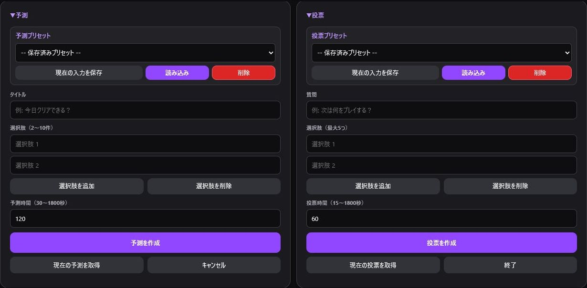
予測と投票---
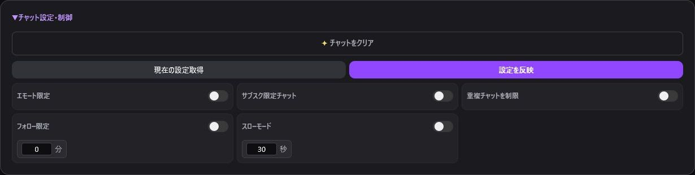
チャット設定チャットクリア、エモート限定、サブスク限定、重複制限、フォロー限定、スローモードをワンクリックで操作できます。
---
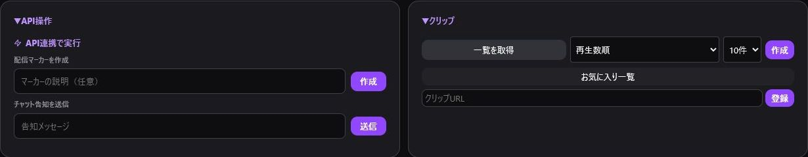
API操作とクリップ配信マーカーと告知メッセージを作成できます。クリップは作成、一覧取得、お気に入り登録に対応しています。
---
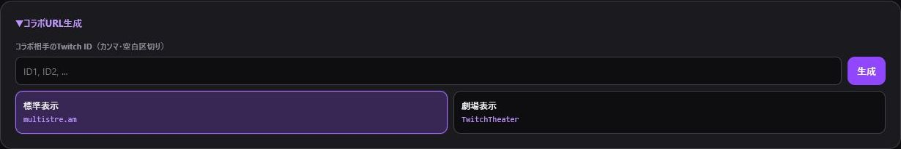
コラボURL生成複数のTwitch IDから、multistre.am または TwitchTheater の同時視聴URLを自動生成します。
---
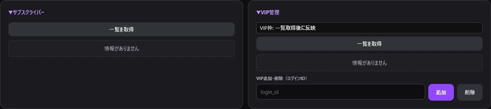
サブスクライバーとVIPサブスクライバー一覧の取得、VIP一覧・残枠の確認、ID入力によるVIP追加・削除を行えます。
機能ごとに必要な権限（Scope）が異なります。操作時にエラーが発生する場合は Twitch認証 とイベントログをご確認ください。
🌐 Language / 語言: 🇯🇵 日本語 | 🇺🇸 English | 🇨🇳 简体中文
---
配信中によく使うTwitchコマンドをカテゴリ別にまとめています。
直接実行にはTwitch認証と対応する権限（Scope）が必要です。
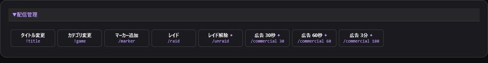
配信管理コマンドタイトル、カテゴリ、マーカー、レイド、広告を操作します。レイド先へのURL案内も自動で送りたい場合は、通知と紹介の/raidボタンを使います。
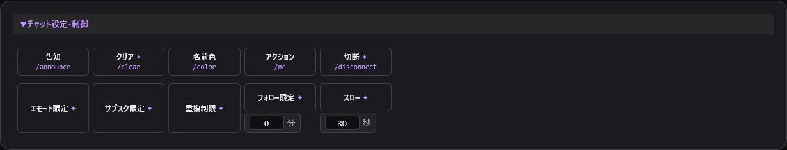
チャット設定コマンド告知、クリア、チャットモード、フォロー限定、スローモードを操作します。
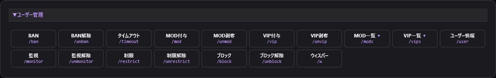
ユーザー管理コマンドBAN、タイムアウト、MOD、VIP、監視、制限、ブロック、ウィスパーを操作します。
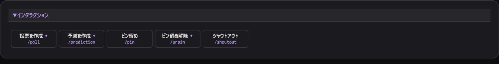
インタラクションコマンド投票、予測、ピン留め、Shoutoutを操作します。詳細な予測・投票はTwitch、紹介文は通知と紹介を使います。
BAN、レイド、広告、権限変更は実行前に対象と内容を確認してください。レイド開始にはchannel:manage:raids権限が必要です。
🌐 Language / 語言: 🇯🇵 日本語 | 🇺🇸 English | 🇨🇳 简体中文
---
コラボ相手やレイド先候補、配信者仲間の情報をカードやカテゴリグループで一括管理します。
「＋ 追加」ボタンで新しいカードやカテゴリグループを作成できます。同じ配信者を複数のグループへ登録でき、グループタグで素早く絞り込めます。
並び順は「表示名」「グループ」「直近の紹介日時」「紹介回数」「誕生日」から自由に切り替えられます。
---
IDリストの各カテゴリボタンには、便利な2セグメント形式の操作が用意されています。
1. タグ文字コピー ({カテゴリ名}):
{グループ名} という置換タグ文字列がクリップボードにコピーされます。タイトルに入力しておくと、配信送信時に全員の @ID に自動置換されます。2. ダイレクト @ID リストコピー (@user1 @user2):
@user1 @user2 形式で直接クリップボードにコピーされ、チャットやSNSへすぐに貼り付けられます。カテゴリボタンにマウスカーソルを合わせる（ホバーする）と、そのグループに所属する参加メンバー一覧がトースト/ツールチップで表示され、事前のメンバー確認が可能です。
---
登録件数が増えた際、同じTwitch IDや表記揺れによる重複登録をワンタップで検索・集約できる「重複ID整理」ボタンを搭載しています。
UserA と usera を同一アカウントとして安全に識別・保護します。---
登録された誕生日・記念日は、画面上部の通知バーおよびカレンダーポップオーバーに自動表示されます。
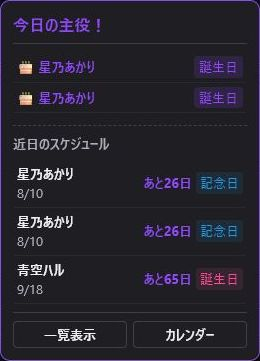
誕生日・記念日の通知定期的なデータ保護のため、定期的にバックアップ・復元を行ってください。
🌐 Language / 語言: 🇯🇵 日本語 | 🇺🇸 English | 🇨🇳 简体中文
---
配信準備やゲーム進行、コラボ当日の流れをメモカードとして保存・編集できます。
*）、斜体（#）、引用（>）、コードブロック（``）、リンク、タスクリスト（- [ ]`）をワンタップで挿入できます。1. , 2. ）の自動カウントアップ。Tab / Shift+Tab キーによる最大3階層のリストインデント（ネスト）に対応。---
データの退避と移行を行います。詳しくは 設定・バックアップ を参照してください。
---
Twitch認証、レイド通知、チャンネルポイント操作、コマンド実行などの各種動作ログを確認できます。お問合せ時にエラーログを保存・確認できます。
🌐 Language / 語言: 🇯🇵 日本語 | 🇺🇸 English | 🇨🇳 简体中文
---
右上の歯車アイコンで共通設定の変更とバックアップ・復元を行います。
トークンの保存、連携アカウントの確認、認証解除を行います。詳しくは Twitch認証 を参照してください。
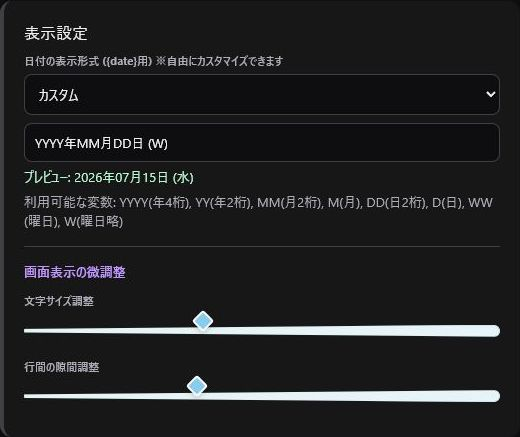
表示設定日付形式、文字サイズ、行間を変更できます。日付形式は画面上部および {date} タグの置換テキストに即時反映されます。
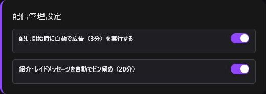
配信管理設定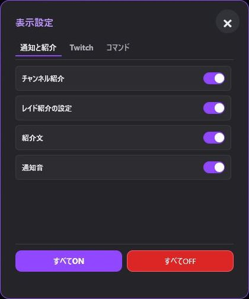
機能ブロックの表示設定「通知と紹介」「Twitch」「コマンド」の各機能の表示・非表示を切り替えられます。非表示にしても内部データは削除されません。
---
保存データの退避・環境移行・PC復旧を行うための高度なバックアップ機能を搭載しています。
バックアップ保存時、以下のデータドメインを個別に選択して保存できます：
{count} 含む）バックアップファイルの読み込み時、用途に合わせて復元方法を選択できます。
.txt プレーンテキストファイル復元対応.json ファイルに加えて、.txt ファイルの読み込みにも完全対応しています。
ゲーム名 | タイトル名）や、@TwitchID のテキストリストを自動解析し、タイトルカードやIDリストとしてスムーズにインポート可能です。.json と .txt が最初から並列で一括表示されます。💡 安全のためのアドバイス: データ復元を行う直前にも、必ず「現在のデータのバックアップ」を作成しておくことをおすすめします。
🌐 Language / 語言: 🇯🇵 日本語
---
TwitchManagerロゴは、配信画面やWebページのバナー、SNS、動画、記事、紹介素材などへ任意で使用できます。個人・法人、商用・非商用を問わず、事前連絡なしで掲載・転載・再配布できます。
クレジット表記は任意です。表記する場合は、プロダクト名とGitHubのURLだけで構いません。
TwitchManager
https://github.com/MagnestGames/TwitchManager🌐 Language / 語言: 🇯🇵 日本語 | 🇺🇸 English | 🇨🇳 简体中文
---
問題が起きたら「その他」タブのイベントログを確認し、再設定前にバックアップを作成してください。
| 症状 | 確認すること |
|---|---|
| OBSに表示されない | カスタムブラウザドックのURLと設置場所 |
| Twitch操作が失敗する | 連携アカウント、トークン、Scope |
| 外部サウンドが鳴らない | 音声フォルダの再選択 |
| OBSブラウザソースから音が出ない | 出力設定、ブラウザソース、音声ミキサー |
| 通知音が二重に聞こえる | ブラウザソースの数、音声モニタリング |
| お出迎え通知が鳴らない | 配信状態、権限、登録ID、検出待ち時間 |
| OBSと通常ブラウザで内容が違う | 保存領域とバックアップ |
| レイドや通知を検知しない | 認証、EventSub、機能のスイッチ |
1. 設定画面の連携アカウントを確認します。
2. 必要な権限（Scope）を付けてトークンを再発行します。
3. イベントログの認証・権限エラーを確認します。
ポイント引き換え履歴にはchannel:read:redemptions、レイド開始にはchannel:manage:raidsが必要です。
タイトル反映後にOBS標準の配信情報だけが古い場合は、そのドックを再読み込みします。
1. 「音声フォルダを選択」から同じフォルダを再選択します。
2. 各通知の音源を選び直します。
3. 試聴して保存します。
再読み込みやOBS再起動後は再選択が必要です。それでも鳴らない場合は、スイッチ、音量、除外ID、OBSの音声ミキサーを確認し、wavまたはmp3で試してください。
1. 「🔊 OBSへ通知音をまとめる」を開き、「通知音をOBSブラウザソースから出す」が有効か確認します。
2. OBSへ登録したURLが、画面に表示されたブラウザソースURLと一致するか確認します。
3. OBSの音声ミキサーで、対象のブラウザソースがミュートされていないか確認します。
4. ブラウザソースを非表示にしたとき終了する設定を使っている場合は、ソースを表示してから再度試聴します。
通知音が二重に聞こえる場合は、同じブラウザソースを複数追加していないか確認してください。配信者向けの音声モニタリングをデスクトップ音声でも取り込んでいる場合は、OBSの音声経路も見直します。
moderator:read:chatters権限があることを確認します。キャッシュやサイトデータを削除すると、ローカル保存も消えることがあります。バックアップがある場合は「その他」タブから復元します。
OS、OBSのバージョン、発生手順、時刻、スクリーンショット、イベントログを控えてください。アクセストークンや個人情報は共有しないでください。
🌐 Language / 語言: 🇯🇵 日本語 | 🇺🇸 English | 🇨🇳 简体中文
---
キャッシュやサイトデータを削除すると、保存データも消えることがあります。バックアップがあれば「その他」タブから復元できます。
トークン、channel:manage:broadcast、カテゴリ名を確認してください。カテゴリはTwitchから同期すると正式名称を取得できます。
OBS標準の配信情報ドックを再読み込みするか、Ctrl+Rを押してください。
使えます。「音声フォルダを選択」から設定してください。OBS再起動や再読み込み後は同じフォルダの再選択が必要です。
扱えます。通知音設定の「🔊 OBSへ通知音をまとめる」からURLをコピーし、OBSへブラウザソースを1つ追加してください。有効時はOBSブラウザソースから、無効時はTwitchManager本体から再生します。
反応します。Twitchの参加者一覧を定期的に確認するため、入室から通知まで数分かかる場合があります。配信開始時から参加者一覧にいた場合や、同じ配信ですでに一度通知した場合は鳴りません。
「3日後に通知」を選ぶと、同じ更新を3日後にもう一度通知します。「スキップ」はそのバージョンだけを通知しない設定です。さらに新しいバージョンが公開されると、再び通知します。beta版ではアップデート通知を表示しません。
保存領域が異なる場合があります。片方でバックアップし、もう片方で復元してください。